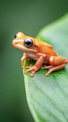

Where Frogs Live
Frogs live in many different environments around the world. Because their skin must stay moist, most frogs live near water or in humid areas. Different species have adapted to survive in ponds, forests, grasslands, and even deserts.

Ponds, Lakes, and Wetlands
Freshwater habitats are the most common homes for frogs. Ponds, marshes, and wetlands provide safe places for frogs to lay eggs and for tadpoles to grow.
- Still water protects eggs from strong currents
- Wet plants provide shelter from predators
- Large insect populations provide food
Rainforests
Tropical rainforests are home to many colorful and unique frog species. These environments are warm, humid, and full of trees and plants for climbing and hiding.
Tree frogs use sticky toe pads to move through branches, and some species even lay their eggs on leaves above water.
Forests and Grasslands
Some frogs live mostly on land in forests or grassy areas. They stay close to damp soil, fallen leaves, or shaded areas to keep their skin from drying out.
Even land-dwelling frogs usually return to water during breeding season.

Deserts and Dry Areas
Although frogs need moisture, a few species have adapted to very dry environments. These frogs survive by burrowing underground and entering a dormant state until rain arrives.
- They store moisture in their bodies
- They stay underground for months or even years
- They emerge quickly after rainfall to breed
Why Habitat Protection Matters
Frogs depend on clean water and healthy environments to survive. Habitat loss, pollution, and climate change are major threats to frog populations around the world.
Protecting wetlands, reducing pollution, and preserving natural areas helps frogs and many other species that share the same ecosystems.